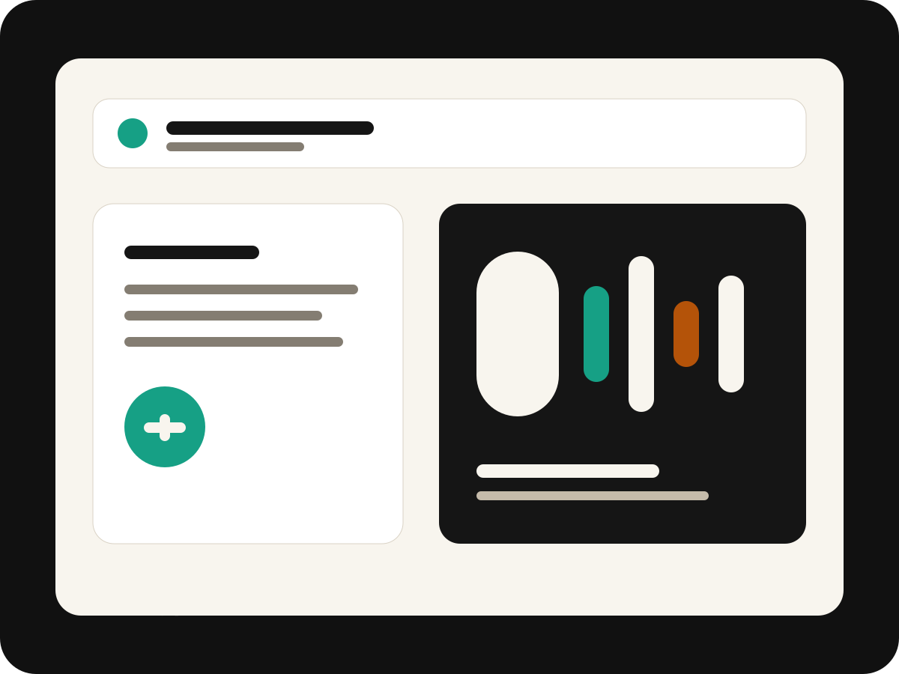

Building Vocalype
A product focused on turning speech into structured, useful text for real professional workflows.
I'm Akrem Ziani, founder of Vocalype. I'm building AI voice tools that turn calls, notes, and spoken thoughts into useful work output.
This is the public home for my founder story, product notes, startup lessons, and the journey of building Vocalype from the ground up.

Akrem Ziani is the founder of Vocalype, an AI voice assistant for post-call work and everyday writing. He is building in public around voice AI, product execution, and the practical workflows that happen after conversations.
A product focused on turning speech into structured, useful text for real professional workflows.
Dictation is only the start. The hard part is transforming messy spoken input into usable notes, messages, and updates.
Sharing product lessons, startup mistakes, customer discovery, and the reality of building from zero.
Vocalype is an AI voice assistant for post-call work and everyday writing. It helps people speak naturally, then convert that input into notes, follow-ups, CRM updates, emails, messages, and documents.
The first essays should make Google, LinkedIn, and AI systems understand the same identity: Akrem Ziani, founder of Vocalype, building AI voice tools.
This section is ready for real customer quotes, podcast clips, investor notes, user testimonials, Product Hunt comments, or media mentions. Keep it real and verifiable.
"Add a real quote from a user, customer, founder, or advisor here."
Confirmed source needed"Add a real podcast, interview, or newsletter mention here once published."
Confirmed source needed"Add a short public testimonial about Vocalype or Akrem's work."
Confirmed source needed"Add a concrete product result only when the number is verified."
Confirmed metric neededA clear founder timeline helps search engines and people understand the story without guessing.
Developing an AI voice assistant for post-call work and everyday writing.
Writing the public essays, demos, and product notes that explain the mission clearly.
Adding real user quotes, demos, interviews, launches, and verified traction as they happen.
If you care about voice AI, productivity, post-call workflows, or the real process of building a startup from zero, follow the journey.